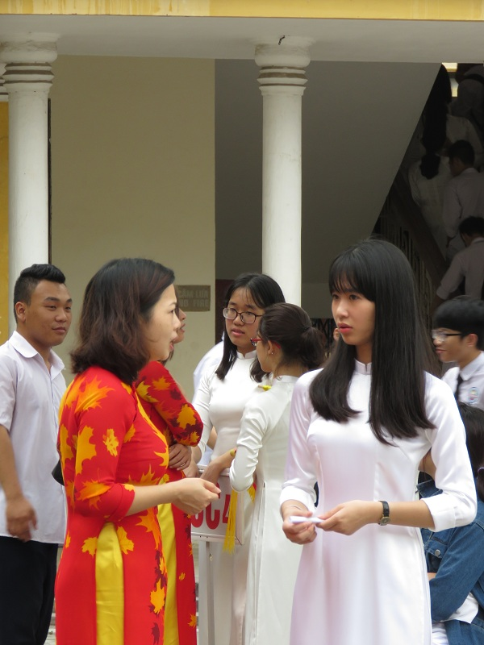
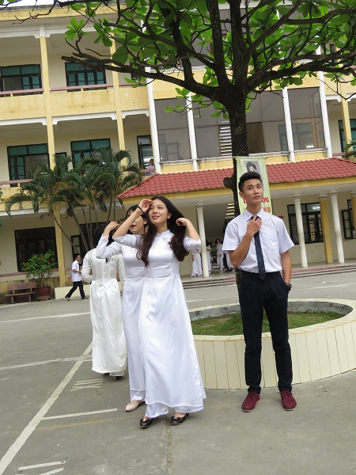

Cứ vào sáng thứ Hai đầu tuần, cả không gian sân trường THPT Lê Hồng Phong (quận Hồng Bàng, Hải Phòng) lại rợp bóng áo dài truyền thống của cô và trò tới lớp.
Nhớ lại những ngày đầu quyết định đưa áo dài vào làm trang phục tới lớp, cô giáo Nguyễn Thị Lệ -
hiệu trưởng nhà trường cho biết: "Việc chọn và vận động học sinh, cô giáo trong trường mặc áo
dài tới lớp được BGH tuyên truyền và triển khai từ cách đây gần 1 năm. Thời kỳ đầu, ai cũng lo
chủ trương này khó thực hiện được song không ngờ, các con rất hào hứng, phấn khởi khi mặc trang
phục truyền thống này tới lớp. Dường như ý thức việc “hành vi xứng y phục” nên tâm tính của các
em cũng thay đổi hẳn, nghiêm túc hơn, hành xử đẹp hơn”.

Chia sẻ về việc nhà trường đề nghị học sinh mặc áo dài tới lớp vào mỗi ngày thứ 2 hàng tuần, chị
Vũ Minh Anh, 45 tuổi,một phụ huynh vui vẻ nói: "Chúng tôi rất ủng hộ phong trào mặc áo dài tới
lớp của nhà trường. Áo dài là trang phục truyền thống đẹp, duyên dáng, đằm thắm, thướt tha của
phụ nữ Việt Nam.

Việc học sinh nữ, giáo viên nữ mặc áo dài đến trường để học tập và thực hiện công tác giáo dục
không chỉ đẹp, còn thể hiện tính mô phạm và nghiêm túc trong môi trường giáo dục, sẽ hạn chế tối
đa được những hành động chưa đẹp mắt trong nhà trường.